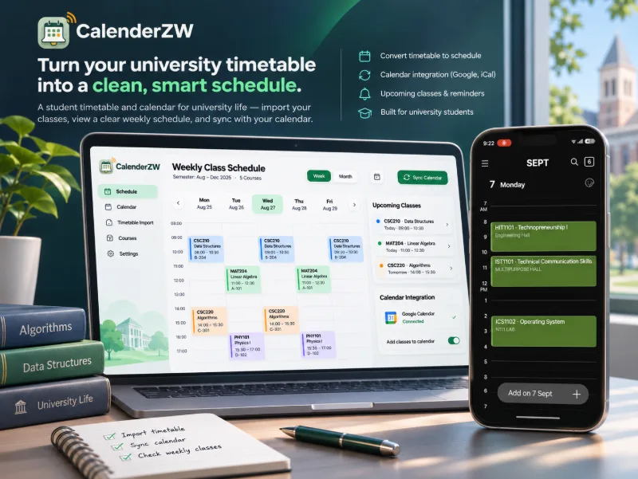

The sale has to survive a dropped connection
ShelfSmart is the starting point for an offline design exercise: save the sale locally, retry with the same ID, and show the cashier what’s pending.

Field notes on building software, using AI with care, and starting a career in tech from Zimbabwe.
ShelfSmart is the starting point for an offline design exercise: save the sale locally, retry with the same ID, and show the cashier what’s pending.
ShelfSmart is the starting point for an offline design exercise: save the sale locally, retry with the same ID, and show the cashier what’s pending.
A practical loop for AI-assisted development, with one workflow to verify and two studies that explain why I measure the whole job.
CalenderZW starts with a familiar Zimbabwean campus problem. The useful test is what happens after somebody sends the timetable to a classmate.

A successful request can still return the wrong shape. Here’s a small parser for the boundary and the requests I’d test around it.
Use a real hospitality workflow to decide what automation can answer, when it should hand off, and what staff need to see.

A small, finished project gives you something concrete to discuss in an interview. Here’s what I’d build and what I’d put in the README.
Start with the question a customer came to answer. Then test whether they can finish the job from a phone.